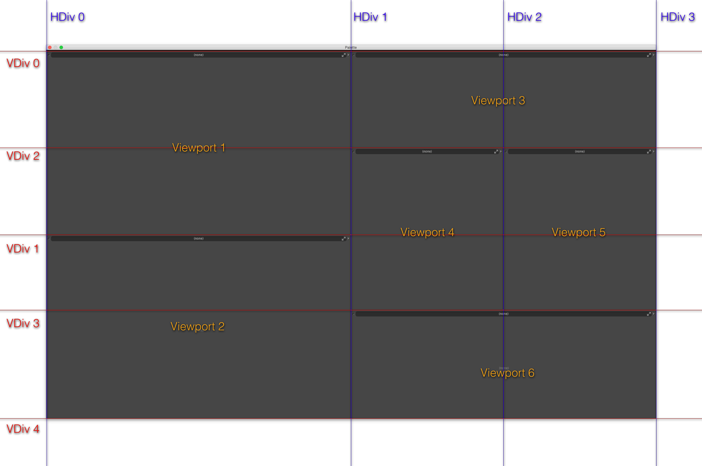

Creating Layouts¶
Origins¶
This is a somewhat low-level explanation of the config format used for modo layouts. It was extracted from an internal doc, and is a bit technical and assumes some deep knowledge of modo configs. It describes how to create a layout completely from scratch by modifying config files.
Overview¶
Every layout in MODO should be created by following these docs and the naming conventions used. This ensures each layout has a common basis but at the same time allows them to be tailored to individual workflows.
How to Create a New Layout¶
<br /> Delete your user config, it’s probably a good idea to also remove any kits or other custom configs etc. <br />
It’s important that new layouts are created at our minimum recommended screen resolution, 1920 x 1080. This ensures the ideal sizes stored in the configs for each viewport are set to good default values and will help to keep the same proportions when resizing the window. Aside from this it ensures that everything fits on smaller screens, it’s easy to design layouts for 30” monitors…
There is an internal command, layout.size, that will set the main MODO window to this size, or close to it as it does not take into account the title bar and window borders. It’s close enough for this purpose though.
If you’ll be spending a while working on layouts then adding the following config fragment to a startup.cfg file in your user configs directory will really help.
1 2 3 | <atom type="Window">
<hash type="Position" key="main">0 0 45 1920 1080</hash>
</atom>
|
If you’re working on a Mac then creating a quick Automator app that deletes your user config will help keep your sanity too. Put it on your desktop and then just double click it to delete the config. <br /> <br /> <br /> ‘’’Throughout these docs “XXXX” should be replaced with your layout name, e.g. LayoutXXXX means LayoutModel or LayoutMODO etc.’’’ <br /> <br /> <br />
Creating the Main Frame¶
Duplicate “TemplateBaseLayout.cfg” and rename it for the layout you’re making, e.g. LayoutModel.cfg. The “Layout” prefix keeps the layout files together making them easier to manage and maintain.
Keep the new layout config in the resources directory with all the other configs.
Open the file for editing.
The first config fragment in the file defines the main layout. Change the “UserName” atom to the name of your new layout, e.g. “MODO”. This is the name that will appear in the Switcher Bar.
In the same fragment there’s a commented out “SwitcherClass” atom, remove the comments. This will enable the layout to appear in the Switcher Bar.
The next step is to do a search and replace. Search for “BaseLayout” and replace with “LayoutXXXX”, where XXXX is the name of your layout, e.g. “LayoutMODO”. Do this for the whole file, wherever “BaseLayout” is found, viewport names, config hashes, command arguments etc.
Save your changes, delete your user config, build, start MODO, set the window size (this is where the Automator app and default window size set in the startup config become handy, you’ll be doing this over and over!).
Switch to your new layout from the Switcher Bar, you should see this:
./image:LayoutMainFrame.png
This is a fully functional framework for the new layout containing the default collapsible panels on the left and right, the default “Modes” toolbar at the top and the lower toolbar containg the buttons that allow the panels to be switched and collapsed.
Layout Specific Changes¶
The next step is to adjust this default framework for your layout, this is just a case of deciding which of the standard toolbars or panels should be visible by default when the user opens the layout for the first time. So a Model layout would display the modelling toolbar, a Sculpting/Painting layout would shown the “Brush” toolbar etc.
This is done by setting the “CurrentTab” atom for the tabbed viewports that define the left and right panels.
For the left panel, search for “LayoutXXXXLeftPanel” in the config, set the “CurrentTab” atom to 0 for the “Model” toolbar, 1 for the “Brush” toolbar and 2 for the “Scene” toolbar.
For the right panel, search for “LayoutXXXXRightPanel”, set the atom to 0 for the first viewport group, 1 for the second and 2 for the third. Each of these groups currently contain variations of the Item List, Shader Tree and Properties and are subject to change. For now just pick the one most appropriate for your layout. Once these are standardised this section of the docs can be updated.
Either or both the side panels can be hidden or collapsed by default, an example would be the Render layout in 801 where there’s no toolbar on the left. To do this see the section below for instructions, but this should only be done as a final step once the rest of the layout has been built.
If a layout requires a custom toolbar, for example the Topology or UV layouts, then placeholders for these are provided with an optional “Custom” button and tab for each of the side panels. This allows a layout to display focused toolbars and and still have easy access to the standard modelling, brush and scene toolbars.
For the left panel, search for “base.LayoutXXXXCustomToolbar” and enter the name of the toolbar form in the “ExportedSheet” list type. Set the button name.
For the right panel, search for “base.LayoutXXXXRightPanelTabD” and enter the name of the viewport group in the “framePreset” atom type. Set the button name.
If the layout does not require either or both of these custom buttons/tabs then the buttons can be commented out in the config. Look for comments in the LayoutXXXXLeftPanelToolbarButtons and LayoutXXXXRightPanelToolbarButtons config fragments. There’s no need to comment out or remove the tab viewport definitions, it’s best to leave them in in case they’re needed in the future.
Save your changes, delete your user config, build, start MODO, set the window size… check your changes are Ok. If they are the this part of the layout is complete and you can move onto the next part. <br /> <br /> <br />
Creating the Centre Group¶
Duplicate “TemplateBaseCentre.cfg” and rename it for the layout you’re making, e.g. LayoutModelCentre.cfg. The “Layout” prefix keeps the layout files together making them easier to manage and maintain.
Keep the new layout config in the resources directory with it’s associated main frame config.
Open the file for editing.
The first step is to do a search and replace. As before search for “BaseLayout” and replace with “LayoutXXXX”, where XXXX is the name of your layout, e.g. “LayoutMODO”. Do this for the whole file, wherever “BaseLayout” is found, viewport names, config hashes, command arguments etc. This is a much smaller file so there’s not many to replace.
Save your changes, delete your user config, build, start MODO, set the window size, switch to your layout.
You’ll now see the standard Timeline in the central area of the layout and the “Time” button in the lower toolbar will now be enabled. Clicking on it will hide the Timeline, this should be the default state but needs to be done last, see the section below for details.
Above the Timeline there is still a blank area, this is where your layout specific viewports will be placed.
At this point the standard part of the new layout is complete, the rest is specific to each individual layout.
./image:StandardLayout.png
Layout Specific Changes¶
There’s no shortcut here for a lot of experimenting, manual config editing and testing but the basic process is to define a viewport group containing the viewports you want. This is then inserted into the layout replacing the default blank placeholder viewport group.
The easiest way to do this is to make a Viewport Preset in MODO, this preset is then exported and manually edited and inserted as described below. To do this…
Delete your user config, build, start MODO, set the window size…
Click on the arrow in the top right corner of the “Centre Blank” viewport, choose “Application->ViewportGroup”. Configure the “(none)” viewport by splitting it and setting viewport contents as needed.
Note: When choosing viewports always use the template presets where available. These are setup with the correct defaults for each viewport type.
(The “Template” part of their name will be removed before shipping)
./image:ViewportPresets.png
For example, the following is a very simple Scene and Schematic split viewport:
./image:SceneSchematicSplit.png
Once you have your viewports defined it’s time to save it as a viewport preset and export it.
Open the viewport menu for the “Viewport Group” by clicking on the arrow in the top right corner. Choose “Viewport Controls -> Save Viewport As…” and enter a name in the dialog. Tip: don’t worry about the name, it can be changed later, I use something like “xXMyViewportXx” to make it easy to find in the exported config. Don’t worry about changing the Viewport Category in the dialog either. Click on “OK”. You should see the main viewport group title change from “Centre Viewport Group” to “xXMyLayoutXx”.
To export the viewport preset choose “File -> Config Export…” and give it a name (anything really) and save it to your desktop, not in any config directory. Choose “Layouts” for the “Fragment” and uncheck “Import Resulting File”. Click “OK”.
Open the exported config file and look for the name you gave your viewport group. This is the base definition of the viewports that you’ll be inserting into your real config.
1 2 3 4 5 6 7 8 9 | <hash type="vpgroup" key="base.xXMyViewportXx" val="reigstered">
<atom type="framePreset">vpgroupLayout6014</atom>
<atom type="instanceSource"></atom>
<atom type="ViewportLock2">0 0</atom>
<atom type="MinHeader">0</atom>
<atom type="QuadLock">0</atom>
<atom type="ViewportTitle">xXMyViewportXx</atom>
<atom type="ViewportClass">vpapplication</atom>
</hash>
|
1 2 3 4 5 6 7 8 9 10 11 12 | <hash type="Layout" key="base.vpgroupLayout6014" val="viewportGroup">
<atom type="IdealSize">1348 790</atom>
<list type="VDiv">0.6139241</list>
<list type="Port">schematic 0 1 1 2 vpgroupLayout6014_vp_00505857676</list>
<list type="Port">vpgroup 0 1 0 1 vpgroupLayout6014_vp_04396857677</list>
<atom type="PostRestoreCommand"></atom>
<atom type="Icon"></atom>
<atom type="InputRemappingContext"></atom>
<atom type="Tooltip"></atom>
<atom type="SwitcherClass"></atom>
<atom type="SwitcherThumbnail"></atom>
</hash>
|
1 2 3 4 5 6 7 8 9 10 11 12 13 | <hash type="schematic" key="base.vpgroupLayout6014_vp_00505857676" val="unregistered">
<atom type="PreviewDraw">0</atom>
<atom type="GroupPreviewDraw">1</atom>
<atom type="EditColors">1</atom>
<atom type="ShowGraphs">1</atom>
<atom type="ShowChannels">1</atom>
<atom type="ViewportLock2">0 0</atom>
<atom type="MinHeader">0</atom>
<atom type="QuadLock">0</atom>
<atom type="ViewportTitle">Schematic</atom>
<atom type="ViewportClass">vputility</atom>
<atom type="GLControls">1</atom>
</hash>
|
1 2 3 4 5 6 7 8 9 | <hash type="vpgroup" key="base.vpgroupLayout6014_vp_04396857677" val="unregistered">
<atom type="framePreset">TemplateSceneSingle_Layout</atom>
<atom type="instanceSource"></atom>
<atom type="ViewportLock2">0 0</atom>
<atom type="MinHeader">1</atom>
<atom type="QuadLock">0</atom>
<atom type="ViewportTitle">Template: 3D Scene Single</atom>
<atom type="ViewportClass">vp3dEdit</atom>
</hash>
|
Once all the sections have been found and copied into your config they need to be edited.
On the first line change the viewport group name to something descriptive with the “LayoutXXXX” prefix, also change “registered” to “unregistered”. This prevents it from showing up in the viewport preset menus, unless you want it to. Note that these replace the old hints, “listed” and “unlisted”, which were backwards (i.e.: “unlisted” would cause it to show up in the popup)).
Give each of the viewports descriptive names, following the naming convention and remove as much cruft as possible, e.g. all the default config atoms and list types etc.
1 2 3 4 5 6 7 | <hash type="vpgroup" key="base.LayoutXXXXSceneSchematicSplit" val="unlisted">
<atom type="framePreset">LayoutXXXXSceneSchematicSplitLayout</atom>
<atom type="ViewportLock2">0 0</atom>
<atom type="MinHeader">0</atom>
<atom type="ViewportTitle">Scene and Schematic</atom>
<atom type="ViewportClass">vpapplication</atom>
</hash>
|
1 2 3 4 5 6 | <hash type="Layout" key="base.LayoutXXXXSceneSchematicSplitLayout" val="viewportGroup">
<atom type="IdealSize">1348 790</atom>
<list type="VDiv">0.6139241</list>
<list type="Port">schematic 0 1 1 2 LayoutXXXXSchematicViewport</list>
<list type="Port">vpgroup 0 1 0 1 LayoutXXXXSceneViewport</list>
</hash>
|
1 2 3 4 5 6 7 8 9 10 11 | <hash type="schematic" key="base.LayoutXXXXSchematicViewport" val="unregistered">
<atom type="PreviewDraw">0</atom>
<atom type="GroupPreviewDraw">1</atom>
<atom type="EditColors">1</atom>
<atom type="ShowGraphs">1</atom>
<atom type="ShowChannels">1</atom>
<atom type="ViewportLock2">0 0</atom>
<atom type="ViewportTitle">Schematic</atom>
<atom type="ViewportClass">vputility</atom>
<atom type="GLControls">1</atom>
</hash>
|
1 2 3 4 5 6 7 | <hash type="vpgroup" key="base.LayoutXXXXSceneViewport" val="unregistered">
<atom type="framePreset">TemplateSceneSingle_Layout</atom>
<atom type="ViewportLock2">0 0</atom>
<atom type="MinHeader">1</atom>
<atom type="ViewportTitle">Scene</atom>
<atom type="ViewportClass">vp3dEdit</atom>
</hash>
|
The final step is to change the layout to include your new viewport group. In “base.LayoutXXXXCentreLayout” change:
1 | <list type="Port">blank 0 1 0 1 LayoutXXXXCentreBlankVP</list>
|
to your viewport name, don’t miss changing “blank” to “vpgroup”, e.g.
1 | <list type="Port">vpgroup 0 1 0 1 LayoutXXXXSceneSchematicSplit</list>
|
Save your changes, delete your user config, build, start MODO, set the window size and change to your layout:
./image:ExampleLayout.png
Delete the temporary exported config when you’re sure you have taken everything you need from it.
Adding a Button to Collapse a Viewport¶
Let’s say that we want to add a button to the lower toolbar that collapses the Schematic viewport in the above example.
Look for the “LayoutXXXXCentreViewportButtons” form and add the following in place of the stand-in button (there’s a coment in the config showing where to add controls).
1 2 3 4 5 | <list type="Control" val="cmd viewport.collapse ? tag {LayoutXXXXSchematicVPTag} down {LayoutXXXXSchematicVPKey}">
<atom type="Label">Schematic</atom>
<atom type="IconResource">anim.panelBottom</atom>
<atom type="Hash">333221140017:LayoutXXXX</atom>
</list>
|
The command uses viewport tags and keys to track the collapse state of the viewports, when setting the names for these please use the naming convention of:
1 | LayoutXXXXViewportNameVPTag
|
for the tags and:
1 | LayoutXXXXViewportNameVPKey
|
for the key. This makes maintainance of the config much easier and more readable when trying to find problems.
The last step is to add the tag to the viewport:
1 | <list type="ViewportTags">LayoutXXXXSchematicVPTag</list>
|
e.g:
1 2 3 4 5 6 7 8 9 10 11 12 | <hash type="schematic" key="base.LayoutXXXXSchematicViewport" val="unregistered">
<list type="ViewportTags">LayoutXXXXSchematicVPTag</list>
<atom type="PreviewDraw">0</atom>
<atom type="GroupPreviewDraw">1</atom>
<atom type="EditColors">1</atom>
<atom type="ShowGraphs">1</atom>
<atom type="ShowChannels">1</atom>
<atom type="ViewportLock2">0 0</atom>
<atom type="ViewportTitle">Schematic</atom>
<atom type="ViewportClass">vputility</atom>
<atom type="GLControls">1</atom>
</hash>
|
Save your changes, delete your user config, build, start MODO, set the window size, change to your layout. You should now have a button in the lower toolbar that collapses and restores the Schematic viewport. <br /> <br /> <br />
Collapsing or Hiding Viewports by Default¶
To make the layouts as uncluttered as possible, and to give the users more room to work, you can collapse or hide parts of the interface by default. For example, in the Render layout the left column could be collapsed by default to match the style of the 801 Render layout. <br /> <br /> ‘’’Note: The standard Timeline in the central viewport group should always be hidden by default in each layout.’’’ <br /> <br /> This requires manually editing the config files. The following describes how to do this for the central group but the process is the same for the main frame. <br /> <br />
Editing¶
Delete your user config and start MODO. <br /> Switch to your layout and collapse/hide the viewports as necessary. Don’t change anything else. <br /> Quit MODO and open your user config file. <br /> <br />
Do a search for LayoutXXXXCentreLayout in your user config file. This will contain the edits that describe the collapsed or hidden viewports. Copy the whole fragment into your LayoutXXXXCentre.cfg and paste it under the original. Comment out the original, it’s always a good idea to keep the uncollapsed version in case (when) you need to revert back to it to make changes.
Change the “edit.” to “base.” in the first “Layout” hash line.
There will be one or more “Collapsed” sections in the block, each will have a value that’s a series of numbers and a suffix, e.g. 4564544474:cs. Search for each of these in your user config and copy and paste them into your layout config under the new layout section.
Change the “cs” part of the “Collapsed” hashes to your layout name, e.g. 4564544474:cs becomes 4564544474:LayoutXXXX
You should end up with something like this.
1 2 3 4 5 6 7 8 9 10 11 12 | <!-
<hash type="Layout" key="base.LayoutMODOCentreLayout" val="viewportGroup">
<atom type="IdealSize">1364 792</atom>
<list type="HDiv">0.8</list>
<list type="VDiv">0.6</list>
<list type="VDiv">0.98</list>
<list type="Port">vpgroup 0 1 2 3 LayoutMODOCentreTime</list>
<list type="Port">vptab 1 2 0 3 LayoutMODOCentrePanelTabs</list>
<list type="Port">vptab 0 1 0 1 LayoutMODOCentreUpperViewports</list>
<list type="Port">vptab 0 1 1 2 LayoutMODOCentreLowerViewports</list>
</hash>
->
|
1 | <!- Collapsed Version ->
|
1 2 3 4 5 6 7 8 9 10 11 12 13 14 | <hash type="Layout" key="base.LayoutMODOCentreLayout" val="viewportGroup">
<atom type="IdealSize">1364 975</atom>
<list type="VDiv">0.98</list>
<list type="Port">vptab 0 1 0 1 LayoutMODOCentreUpperViewports</list>
<list type="Collapsed" val="76162839874:LayoutMODO LayoutMODOCentreTimeVPKey right 3">
<atom type="Dividers">0 1 2 2</atom>
</list>
<list type="Collapsed" val="49238839880:LayoutMODO LayoutMODOCentrePanelVPKey right 1">
<atom type="Dividers">1 1 0 2</atom>
</list>
<list type="Collapsed" val="87448839887:LayoutMODO LayoutMODOCentreLowerTabVPKey left 3">
<atom type="Dividers">0 1 1 2</atom>
</list>
</hash>
|
1 2 3 4 5 6 7 8 | <hash type="CollapsedSet" key="76162839874:LayoutMODO">
<list type="HDiv">0</list>
<list type="HDiv">1</list>
<list type="VDiv">0</list>
<list type="VDiv">1</list>
<list type="Port">vpgroup 0 1 0 1 LayoutMODOCentreTime</list>
<atom type="Position">0.9169231</atom>
</hash>
|
1 2 3 4 5 6 7 8 | <hash type="CollapsedSet" key="49238839880:LayoutMODO">
<list type="HDiv">0</list>
<list type="HDiv">1</list>
<list type="VDiv">0</list>
<list type="VDiv">1</list>
<list type="Port">vptab 0 1 0 1 LayoutMODOCentrePanelTabs</list>
<atom type="Position">0.7998534</atom>
</hash>
|
1 2 3 4 5 6 7 8 | <hash type="CollapsedSet" key="87448839887:LayoutMODO">
<list type="HDiv">0</list>
<list type="HDiv">1</list>
<list type="VDiv">0</list>
<list type="VDiv">1</list>
<list type="Port">vptab 0 1 0 1 LayoutMODOCentreLowerViewports</list>
<atom type="Position">0.5476923</atom>
</hash>
|
<br /> <br /> Delete your user config, build and restart MODO, the viewports should now be collapsed or hidden by default. <br /> <br /> See the LayoutMODO.cfg and LayoutMODOCentre.cfg files for a much more elaborate design with multiple collapsing viewports and tab switching. <br /> <br />
More info on the viewport collapsing can be found here:
1 | http://modo901.wiki.thefoundry.co.uk/wiki/Collapsing_and_Hiding_Viewport_Sets
|
Dividing layouts with VDivs and HDivs¶
modo layouts are split up along vertical and horizontal dividers, with each sub-layout being defined by its left, right, top and bottom bounds. Each divider has a fractional value to determine where to put it. Each divider has an index, which is simply the order in which it was added (separately for the HDivs and VDivs). Additionally, the first index (zero) is always the left or upper bound of the window or parent layout, and the last is the lower or right bound. The indices are created from the order in the config; the positions do not affect them. In the below example, there are two HDivs and three VDivs defined in the config, resulting in four and five in total respectively. Notice how VDiv 1 is at 0.5, but VDiv 2 is at 0.33 and VDiv 3 at 0.67. Despite being higher up in the window than VDiv 1, VDiv 2 was added later and thus it has a higher index.
1 2 3 4 5 6 7 8 9 10 11 12 13 14 15 | <hash type="Layout" key="base.ExampleLayout" val="viewportGroup">
<!-- First we create the dividers -->
<list type="HDiv">0.5</list> <!-- Creates HDiv 1 -->
<list type="VDiv">0.5</list> <!-- Creates VDiv 1 -->
<list type="VDiv">0.33</list> <!-- Creates VDiv 2 -->
<list type="VDiv">0.67</list> <!-- Creates VDiv 3 -->
<list type="HDiv">0.75</list> <!-- Creates HDiv 2 -->
<!-- Then we define the contents -->
<list type="Port">blank 0 1 0 1 Viewport_1</list>
<list type="Port">blank 0 1 1 4 Viewport_2</list>
<list type="Port">blank 1 3 0 2 Viewport_3</list>
<list type="Port">blank 1 2 2 3 Viewport_4</list>
<list type="Port">blank 2 3 2 3 Viewport_5</list>
<list type="Port">blank 1 3 3 4 Viewport_6</list>
</hash>
|
1 | <list type="Port">blank 1 2 2 3 Viewport_4</list>
|
Viewport 4 in the middle is defined as a blank viewport. The four integers define the bounds as between HDiv 1 and HDiv 2 horizontally, and between VDiv 2 and VDiv 3 vertically.